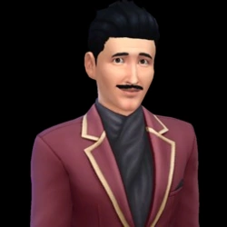
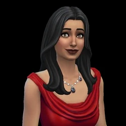
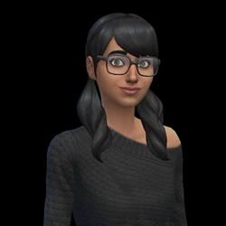

Mortimer Goth

Mortimer Goth is the son of Gunther and Cornelia Goth and was born outside of SimCity in the Old Country.
He grew up at 13 Skyborough Boulevard, a large mansion in Sunset Valley.
Bella Goth

Bella Goth is the daughter of Simis and Jocasta Bachelor, and is the younger sister of Michael Bachelor.
She grew up in a large home in Sunset Valley.
Cassandra Goth

Cassandra Goth is the daughter of Mortimer and Bella Goth and grew up at 5 Sim Lane.
She later moved to 165 Sim Lane in Pleasantview alongside her family.